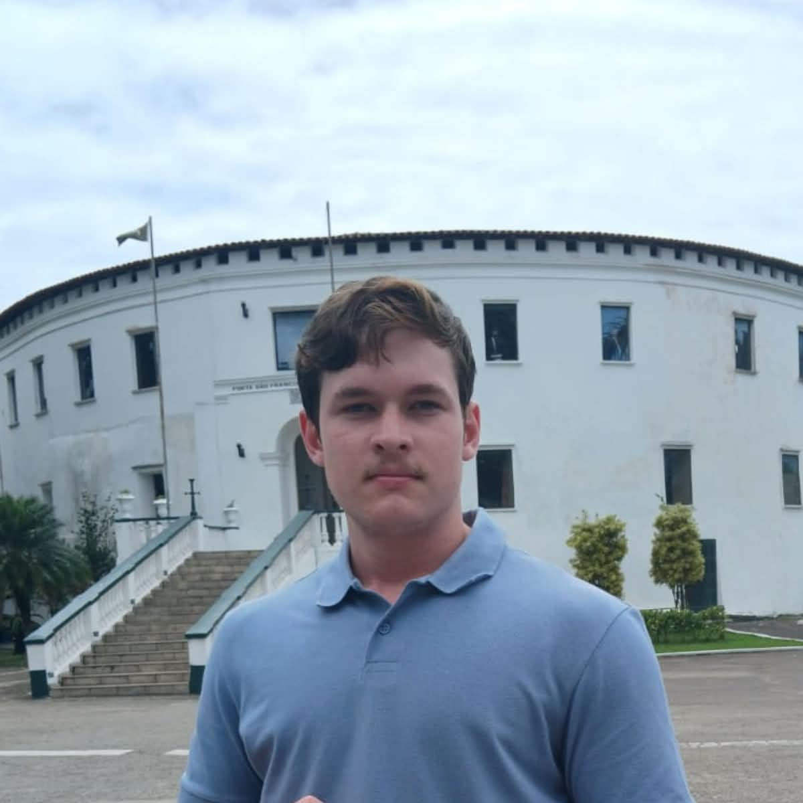

Estudante de Ciência da Computação em busca de crescer na área de tecnologia. Trabalho com front-end (HTML, CSS, Vue.js e TypeScript) e com Python e Django, e agora também crio sites para quem quer ter presença na internet.

Um pouco de quem eu sou e para onde quero ir.
Sou Eduardo Neumam Fraizleben, tenho 18 anos e moro em Vila Velha, no Espírito Santo. Tive contato com o computador desde cedo, e essa curiosidade me levou ao curso técnico em Informática para Internet no Ifes, onde a tecnologia deixou de ser só hobby e virou o caminho que quero seguir.
Hoje faço graduação em Ciência da Computação e, desde abril de 2025, trabalho no LEDS, o laboratório de desenvolvimento de soluções do Ifes. Meu objetivo profissional é atuar com desenvolvimento de sistemas, de preferência em uma equipe onde eu possa aprender muito e entregar coisas úteis.
Quer ver meus códigos? Conheça meu GitHub.
O que eu sei fazer hoje.
Criação de páginas responsivas com HTML e CSS e de interfaces com Vue.js e TypeScript.
Desenvolvimento do lado do servidor com Python e Django, área em que quero seguir me aprofundando.
Modelagem conceitual (MER) e lógica, com experiência em modelos para PostgreSQL.
Trabalho em equipe, organização, comunicação clara e facilidade para aprender coisas novas. Inglês em nível intermediário.
Minha trajetória escolar até aqui e o que desejo para o futuro.
| Etapa | Instituição | Período |
|---|---|---|
| Ensino Fundamental I e II | UMEF Reverendo Antônio da Silva Cosmo | 2014 a 2022 |
| Ensino Médio e Técnico em Informática para Internet | Ifes, Campus Serra (Instituto Federal do Espírito Santo) | 2023 a 2025 |
| Graduação em Ciência da Computação | UVV (Universidade Vila Velha) | 2026 até hoje |
Para o futuro, quero concluir a graduação e seguir me especializando em desenvolvimento de software, aprofundando também em backend.
Matérias do semestre e um resumo de cada uma.
| Matéria | Resumo |
|---|---|
| Construção de Software para Web | Criação de páginas e sistemas para a web com HTML e CSS, formulários, tabelas, mídia e design responsivo. Este site é o trabalho da disciplina. |
| Design e Desenvolvimento de Banco de Dados I | Modelagem de dados com MER e modelo lógico, chaves, relacionamentos e normalização. |
| Experiência e Interface com o Usuário | Como projetar interfaces fáceis de usar: personas, histórias de usuário, wireframes, fluxos de interação e as 10 heurísticas de Nielsen. |
| Fundamentos de Tecnologia da Computação | A base da área: como os computadores funcionam, como os dados são representados e quais são os principais conceitos da computação. |
| Lógica para Computação | Raciocínio lógico aplicado à computação: proposições, conectivos e tabelas-verdade, base para algoritmos e programação. |
| Textos Científicos: Aspectos Metodológicos e Linguísticos | Escrita acadêmica: estrutura de textos científicos, metodologia de pesquisa, citações e referências. |
Projetos e participações que já fizeram parte da minha jornada.
Participei da ESX 2026 apresentando um projeto pelo Ifes.
Apresentação dos projetos desenvolvidos no LEDS para diretores e chefes de setores da FAPES (Fundação de Amparo à Pesquisa e Inovação do Espírito Santo).
Blog com Vue.js e Django, calculadora em JavaScript, aplicativos em Kotlin e os exercícios da faculdade. Ver repositórios.
Hobbies, esportes, música e vídeo de que eu gosto.
Sou torcedor do Fluminense. É um amor que vem desde criança, com uma forte influência do meu pai.
Whispers in the Dark, do Skillet
Um grande jogo do Fluminense: o 4 x 1 sobre o Flamengo na final do Carioca de 2023.
Com o que eu quero trabalhar.
Quero trabalhar com desenvolvimento de sistemas, unindo código bem organizado a interfaces fáceis de usar. A ideia é começar em um estágio, crescer dentro de uma equipe e, em paralelo, continuar desenvolvendo projetos próprios.